Section 3.2: Measures of Variation
Learning Objectives
1.Calculate and interpret the range from data.
2.Calculate the variance and standard deviation from data using technology.
3.Interpret the standard deviation from data.
4.Use the standard deviation to interpret Chebyshev’s inequality.
5.Understand and Interpret the empirical rule for bell-shaped data.
Recall that the goal of this chapter is to describe the distributions of numerical data. When we summarize quantitative data, we address the following 4 characteristics.
•Center- (section 3.1) a way to describe the middle, or most typical. 
•Variation- a way to describe how much the data varies.
•Distribution- (section 2.2) a way to describe the shape of the distribution.
•Outliers- are there any highly unusual values?
We have discussed the shape of the distribution and finding the center of the distribution in sections 2.2 and 3.1. In this section we will discuss variation, or dispersion of data.
When we measure “variation,” we are trying to answer the question “how spread out are the data?” Other words that are synonymous with variation are “dispersion” and “spread.” When the data are close together, we say that there is less variability, less dispersion, or are less spread out. Low variability, then, means the data are more “consistent.” Data that are not grouped closely together are more spread out, have higher variability, are widely dispersed, have more variation, and are less consistent. See figure 3.13.
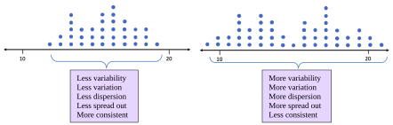
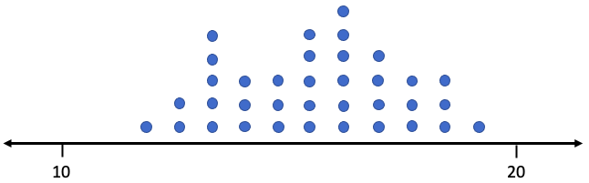
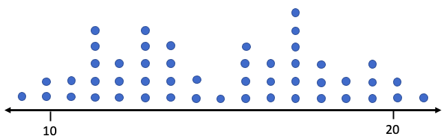
Figure 3.13: Dot plots showing data with less variability and with more variability.
The following questions are equivalent.
•How much variation is in the data?
•How variable are the data?
•How spread out are the data?
•How widely dispersed are the data?
•How consistent are the data?
We want to find numerical measurements that will answer these questions. The first and simplest, but least useful way to describe the dispersion of data is called the range. Range measures the width of the interval that contains the data.
The Range
Definition 1
The Range of a set of data values is the difference between the largest data value (the Maximum or Max) and the smallest data value (the Minimum or Min). The range is calculated as Range = Max – Min. The range is the width of the interval that contains the data.
Interpretation: Generally, a larger range can indicate more variation. A smaller range can indicate less variation.
Example 1: Using the Range
Table 8 gives exam scores for a sample of 5 students in a morning class, and exam scores for a sample of 5 students in an evening class. Find the mean and median and make a dot plot for each group. Are the measures of center enough to describe the two groups? Calculate the range. What does the range tell you about the morning and evening classes?
Table 8: Student Exam Scores | |||
|---|---|---|---|
Morning Class | Evening Class | ||
Name | Score | Name | Score |
Derek | 70 | Cecily | 90 |
Marshawn | 95 | Fred | 82 |
Isabel | 80 | Rafael | 92 |
Sophia | 83 | Trung | 74 |
Juan | 82 | Sue | 72 |
Solution:We have previously computed the mean and median of the student scores from the morning class. The scores in order are 70, 80, 82, 83, 95. The mean is
and the median is also M = 82. The scores for the evening class arranged in ascending order are 72, 74, 82, 90, and 92. The mean is
and the median is also M = 82. The morning and evening classes have the same measures of center. The dot plots are shown in figure 3.14.
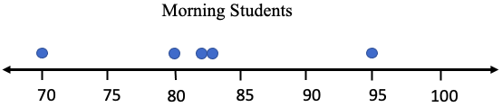
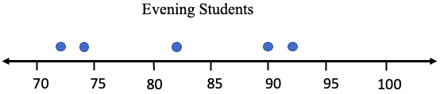
Figure 3.14: Dot plots of morning and evening student scores.
Although the centers are the same for each group, the dots are dispersed differently. The range for the morning group is Range = 95 – 70 = 25. That means that all scores from the morning class fit into an interval that is 25 points wide.
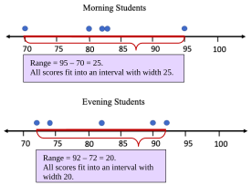
The range for the evening group is Range = 92 – 72 = 20. That means that the evening student scores fit into an interval with width 20 points. Their scores are “closer together” and have less variation in that sense. But there is more to the story! The morning group had one score in the 70’s, three in the 80’s, and one in the 90’s. The evening group had two scores in the 70’s, only one in the 80’s, and two in the 90’s.
The morning group seems more consistent, even though they had the larger range. They had three students score within 3 points of each other, 80, 82, and 83, and each of these was within 2 points of the mean. That seems to be very consistent. So, in this example, the morning group, with the larger range, seems like it has less variation. That is not the way we want a measure of variation to work. For this reason, range is not the preferred way to describe variability.
We need a method to measure variation that considers more than just the highest and lowest values in the data. How the data in the middle are spread out should count too. The next example further illustrates how knowing the center and the range is not adequate in describing variation.
Example 2: Comparing Groups
The data in Table 9 gives quiz scores of 9 students split into two groups, group 1, and group 2. Assume the groups are populations. Find the mean, median, and range of each group, and make dot plots. Compare the statistics. Do these statistics describe the data well?
Table 9: Quiz Scores for Two Groups | |||||||||
|---|---|---|---|---|---|---|---|---|---|
Group #1 | 0 | 0 | 1 | 2 | 5 | 8 | 9 | 10 | 10 |
Group #2 | 0 | 3 | 4 | 5 | 5 | 5 | 6 | 7 | 10 |
Solution:Group #1. The mean is
Since there are 9 observations, which is odd, the median is the 5th observation in the list, which is 5.
The range is the difference between the highest score and the lowest score, so
Range = 10 – 0 = 10.
Summary for Group #1: Mean = 5, Median = 5, and Range = 10.
Group #2. The mean is
There are 9 scores, so the median is the 5th score, which is also 5.
The range is Range = 10 – 0 = 10.
Summary for Group #2: Mean = 5, Median = 5, and Range = 10.
So far, the descriptive statistics we have found would describe the two groups as identical. They have the same mean, same median, and same range. But are the data spread out the same? See figure 3.15.
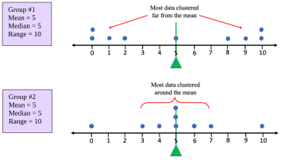
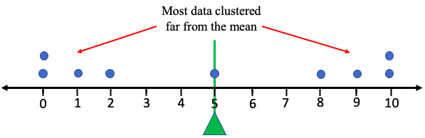
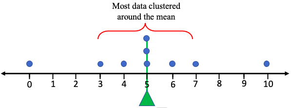
Figure 3.15: Dot plots for two groups.
The two groups appear very different in how they are dispersed. Group #1 appears to be very spread out, with all data far from the mean = 5. But the data in Group #2 appears mostly clustered around the mean = 5, except for the smallest and largest values. Overall, Group #1 is widely dispersed, while Group #2 is closely grouped. The statistics for mean, median, and range do not reflect the difference in the dispersion patterns, and thus do not describe the data well enough. Range is not sufficient to describe the variation because it considers only the highest and lowest values. We need a statistic that measures the average distance from the mean, considering all the data values, not just the highest and lowest.
Variance and Standard Deviation
The idea behind the next measure of variability is to find the ‘average distance of the data from the mean”. The attempt to do this will not quite work in the way you expect, but it will lead to new statistics that measure variation. Keep in mind that we will eventually use technology to perform the calculations. This section will develop the ideas, but STATBELT Utility or other technology will do the heavy computing.
Let’s take the data from Group #1 in the last example. The data values are 0, 0 ,1, 2, 5, 8, 9, 10, 10. We have calculated that the mean is 5. We can calculate the difference between each data value and the mean, then find the average of the differences. Great idea! The difference between a data value and the mean is called a deviation from the mean.
Definition 2
A deviation from the mean is the difference between an observation and the mean of the data set. For a data value, x, in a population, the deviation from the mean is . For a data value, x, from a sample, the deviation is .
Table 10 lists all the data from Group #1 in the first column. From there we will compute the deviations from the mean, or the difference between the data value and the mean, in an organized way.
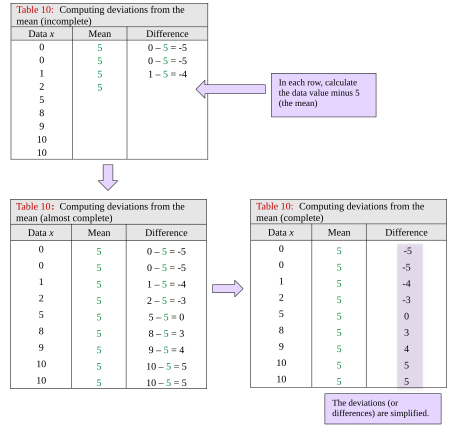
Table 10: Computing deviations from the mean (incomplete) | ||
|---|---|---|
Data x | Mean | Difference |
0 | 5 | 0 – 5 = -5 |
0 | 5 | 0 – 5 = -5 |
1 | 5 | 1 – 5 = -4 |
2 | 5 | |
5 | ||
8 | ||
9 | ||
10 | ||
10 | ||
Table 10: Computing deviations from the mean (almost complete) | ||
|---|---|---|
Data x | Mean | Difference |
0 | 5 | 0 – 5 = -5 |
0 | 5 | 0 – 5 = -5 |
1 | 5 | 1 – 5 = -4 |
2 | 5 | 2 – 5 = -3 |
5 | 5 | 5 – 5 = 0 |
8 | 5 | 8 – 5 = 3 |
9 | 5 | 9 – 5 = 4 |
10 | 5 | 10 – 5 = 5 |
10 | 5 | 10 – 5 = 5 |
Table 10: Computing deviations from the mean (complete) | ||
|---|---|---|
Data x | Mean | Difference |
0 | 5 | -5 |
0 | 5 | -5 |
1 | 5 | -4 |
2 | 5 | -3 |
5 | 5 | 0 |
8 | 5 | 3 |
9 | 5 | 4 |
10 | 5 | 5 |
10 | 5 | 5 |
Next, we find the average of the differences. The average deviation from the mean is
What happened? How can the average distance to the mean be zero? It turns out that this will always be the case because the mean is the balance point for the data. The values below the mean will always be balanced out with values that are above the mean. When you add the positives (above) and negative (below) together, everything cancels out, leaving you with zero. We started by saying that this attempt wouldn’t quite work, and this is the reason why.
So how can we fix it? One option is to use the absolute value of the differences. But if you have taken calculus, you might recall that absolute value functions are not easy to work with. Another option that will create positive values is to square each deviation. Squaring a negative number gives a positive number, right? At first, the idea of squaring all the deviations might seem odd, it did to me when I first learned it. But squared deviations have other, more advanced applications, so we use that approach here too.
Definition 3
A squared deviation from the mean is the difference between an observation and the mean, squared. For a data value, x, in a population, the squared deviation from the mean is . For a data value, x, from a sample, the squared deviation is . The order of operations is to first subtract, then square.
We are almost there! Table 11 shows the data in the first column and the differences (deviations) in the third. The fourth column is the square of each deviation.
Table 11: Computing squared deviations from the mean | |||
|---|---|---|---|
Data x | Mean | Difference | Squared deviation |
0 | 5 | -5 | |
0 | 5 | -5 | |
1 | 5 | -4 | |
2 | 5 | -3 | |
5 | 5 | 0 | |
8 | 5 | 3 | |
9 | 5 | 4 | |
10 | 5 | 5 | |
10 | 5 | 5 | |
The mean of the squared deviations is called the population variance. Here, the calculation gives us a population variance equal to
Sadly, due to the squaring, the units of this measure are squared units. The units of the data in Group #1 are “points” on an exam, so the units for the population variance are “points squared.” That is hard to interpret. The standard thing to do to give this measure a more intuitive feel is to take the square root of the average squared deviation. It seems odd, but the square root (sort of) balances out all the squaring we did. This calculation is called the population standard deviation. Here, the population standard deviation is , or 4.1 rounded to one decimal place. See figure 3.16.
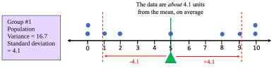
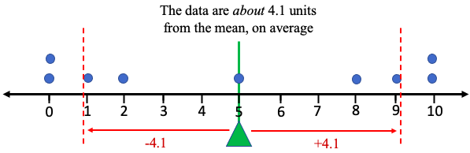
Figure 3.16: Dot plot for Group #1 showing variation about the mean and standard deviation.
The interpretation for this statistic is that the data values in Group #1 are about 4.1 points away from the mean, on average. That isn’t quite correct due to the order of operations of the process, but that is how we interpret the standard deviation. (The actual average deviation using the absolute value is approximately 3.8, so the process we used gives us a very similar number, 4.1, with the advantage that the new idea has wider applications.)
If we apply the same process to Group #2, the population variance comes out to and the population standard deviation comes out to , or 2.6 rounded to one decimal place. Figure 3.17 shows how the data are dispersed and shows how we can interpret the standard deviation.
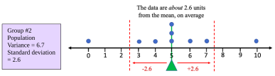
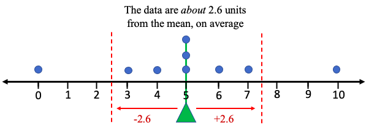
Figure 3.17: Dot plot for Group #2 showing variation about the mean and standard deviation.
We can see that Group #1 was more widely dispersed and had the larger population variance and the larger standard deviation. Group #2 was more closely grouped and had the smaller population variance and the smaller population standard deviation.
Before we cover formulas and technology, we can summarize how we will interpret standard deviation.

Important Point! What does Standard Deviation tell us?
Whether we are working with populations or samples, we interpret standard deviation as a measure of variation.
1.Standard deviation gives an idea of how close the data are to the mean, or how “spread-out” the data are.
2.Most of the data will be within one standard deviation of the mean.
3.LARGER standard deviations correspond to more widely dispersed or spread-out data. More variation indicates a larger standard deviation. A SMALL standard deviation corresponds to data that is less dispersed, less variable, and more closely grouped. See figure 3.18.
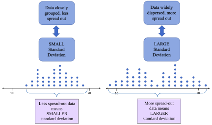
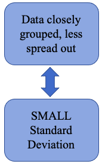
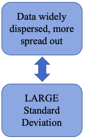
Figure 3.18: Interpretation of standard deviation.
 Tip!
Tip!How to think about standard deviation: Something that is always the same, like an Oreo cookie, has no variation. If you were to measure weights, calories, or anything else in a sample of Oreo cookies, the standard deviation would be close to zero. Oreo cookies are very consistent. On the other hand, Grandma Dee’s famous homemade cookies varied quite a bit. They were made from scratch in small batches and were not always consistent. Some were smaller, some larger, some had more chocolate chips, some had fewer calories, etc. So, the standard deviation for measurements of Grandma Dee’s homemade cookies would be larger, due to the variation. They were less consistent (but delicious!).
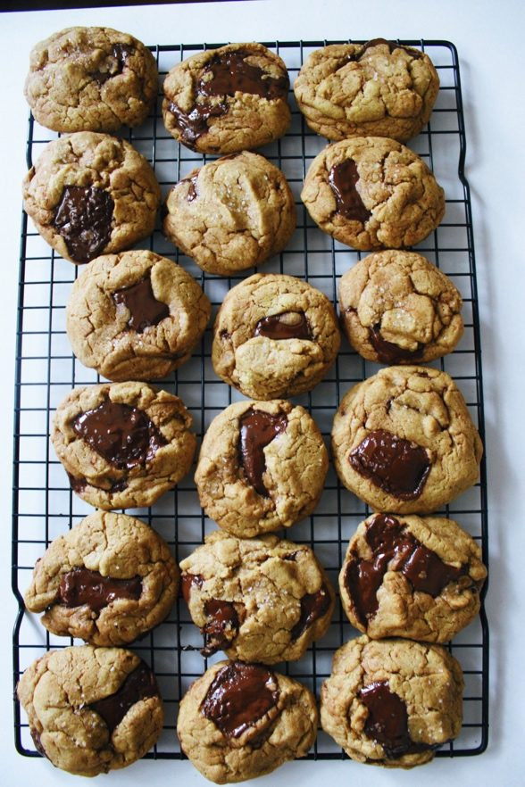
Here are the definitions of population variance and population standard deviation. Throughout most of the book we will focus on standard deviation as a measure of variation and leave the study of variance until later. However, the two are closely related so both are presented here. Also, keep in mind technology will be performing the calculations. The important thing is to be able to interpret and use the standard deviation.
Definition 4: Population Variance and Population Standard Deviation
The population variance of a set of data is the mean of the squared deviations from the population mean. We use the symbol to represent population variance. N represents the population size.
The population standard deviation of a set of data is the square root of the mean of the squared deviations from the population mean. We use the symbol to represent population standard deviation.
You should always use technology to compute these values in this course.
The formulas for sample variance and sample standard deviation are similar but are not the same! Because we are using a sample, there is variability in the calculation of the mean as well as the variability that is due to the sample. The population variance formula would ignore the extra variation and would underestimate the sample variance. We call this a “biased estimator” because it would systematically underestimate the actual value. Using some very high-level math, it can be shown that using n – 1 rather than n in the calculations will remove the bias and give an unbiased estimate for the sample variance.
Definition 5: Sample Variance and Sample Standard Deviation
The sample variance of a set of data of size n is the mean of the squared deviations from the sample mean. We use the symbol to represent sample variance.
The sample standard deviation of a set of data is the square root of the mean of the squared deviations from the sample mean. We use the symbol to represent population standard deviation.
You should always use technology to compute these values in this course.
Using STATBELT Utility, the sample variance and sample standard deviation are given by default when you compute summary statistics with Descriptive Statistics → Basic Statistics. They are called “Sample variance (s²)” and “Sample standard deviation (s).” If you want to find the population variance or population standard deviation, check “Population variance (σ²)” and “Population standard deviation (σ)” under “Statistics to show.”
STATBELT Utility- Finding the Variance and Standard Deviation
Open STATBELT Utility and type or paste the data into one column. Type a name for the column in its heading.
1.Select Descriptive Statistics → Basic Statistics.
2.Under “Columns to include,” check the column with the data.
3.For a broad summary, click “Show results in a new window.” The summary includes the sample variance and the sample standard deviation.
4.If you want the population variance or population standard deviation, check “Population variance (σ²)” or “Population standard deviation (σ)” under “Statistics to show.”
Example 3: Calculating Variance and Standard Deviation
Revisiting example 1. The data in Table 8 gives exam scores for a sample of 5 students in a morning class, and exam scores for a sample of 5 students in an evening class. Use STATBELT Utility to find the mean, median, range, variance, and standard deviation for each sample.
Table 8: Student Exam Scores | |||
|---|---|---|---|
Morning Class | Evening Class | ||
Name | Score | Name | Score |
Derek | 70 | Cecily | 90 |
Marshawn | 95 | Fred | 82 |
Isabel | 80 | Rafael | 92 |
Sophia | 83 | Trung | 74 |
Juan | 82 | Sue | 72 |
Solution:These are samples, so the sample variance and sample standard deviation that STATBELT Utility gives by default are what we need. First, type the data into two columns named “Morning Class” and “Evening Class.” Select Descriptive Statistics → Basic Statistics and check both columns under “Columns to include.” Under “Statistics to show,” also check “Range (max − min).” Then click “Show results in a new window.”
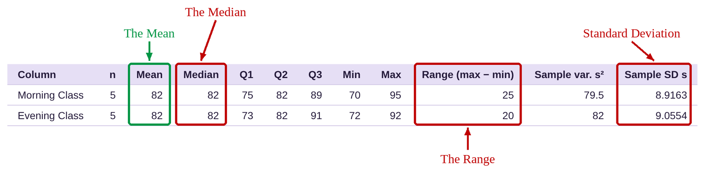
As we saw in example 1, the mean and median of each class is 82. The range of the morning class was 25 while the range of the evening class was smaller at 20. But we also noted that the morning class had three scores very close together around the mean. We suggested that the morning class was more consistent, and that can be seen in the slightly smaller standard deviation. The standard deviation for the morning class is 8.9, and the standard deviation for the evening class is 9.1, both rounded to one decimal place (we usually round standard deviation to one or two more decimal places than the original data). That means that the morning class grades were slightly more consistent than the evening class grades.
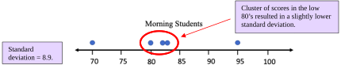
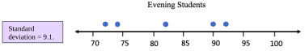
Figure 3.19: Dot plots of morning and evening student scores.
Important! Rounding the Mean and Standard Deviation!
When we calculate the mean and standard deviation, we will round our results to one decimal place more than the original data (two decimal places is also acceptable for the standard deviation). For example, if the data are whole numbers, we should round the mean and standard deviation each to one decimal place. If the data are rounded to one decimal place, we should round the mean and standard deviation to two decimal places.
Example 4: Comparing Groups
The data in Table 9 gives quiz scores of 9 students split into two groups, group 1, and group 2. Assume the groups are populations. Find the population variance and population standard deviation for each group. Which group is more widely dispersed? Which is more closely grouped?
Table 9: Quiz Scores for Two Groups | |||||||||
|---|---|---|---|---|---|---|---|---|---|
Group #1 | 0 | 0 | 1 | 2 | 5 | 8 | 9 | 10 | 10 |
Group #2 | 0 | 3 | 4 | 5 | 5 | 5 | 6 | 7 | 10 |
Solution:First type or copy the data into STATBELT Utility, one column for each group, and name the columns “Group #1” and “Group #2.” Select Descriptive Statistics → Basic Statistics and check both columns under “Columns to include.” Since we are looking for the population variance and standard deviation, click “Select none” under “Statistics to show,” then check “Population variance (σ²)” and “Population standard deviation (σ).” Click “Show results in a new window.”
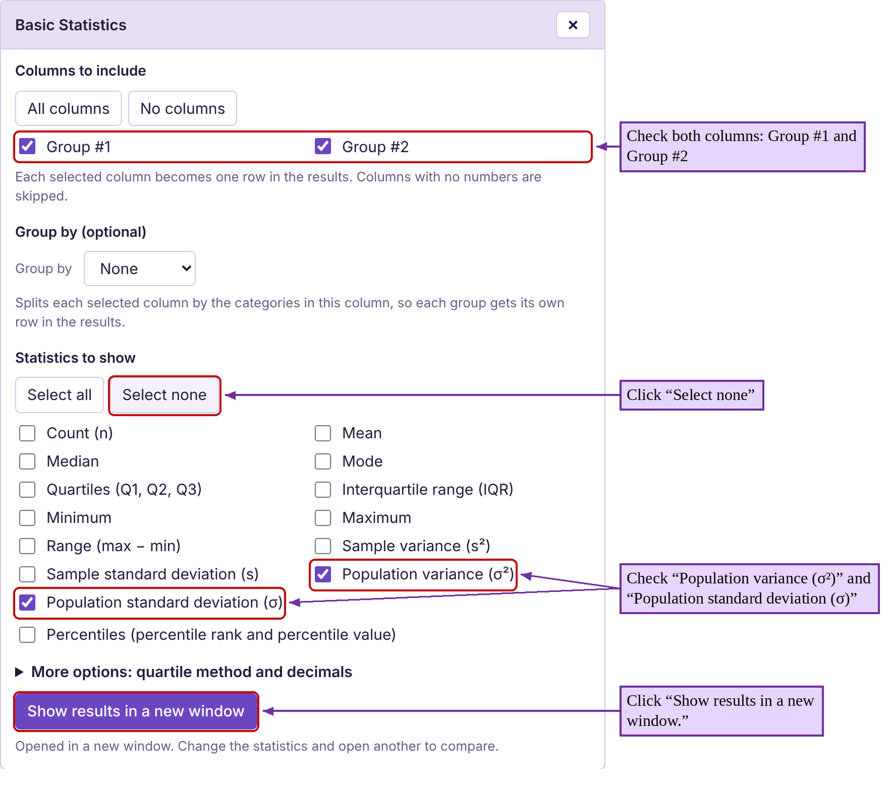
The results are the same as what we saw in example 2. Group #1 had a population variance equal to 16.6667 and standard deviation equal to 4.1. Group #2 had a population variance equal to 6.6667 and standard deviation equal to 2.6.
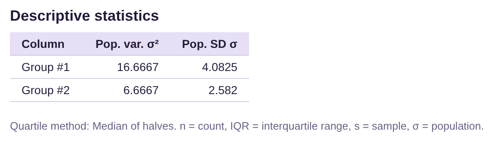
Group #2 had a smaller standard deviation, so the scores were more consistent and were more closely grouped. Group #1 had the larger standard deviation, so the scores were more widely dispersed.
Example 5: Finding descriptive statistics
A student looked at her phone records and wrote down the number of spam calls she received each day for the first 24 days of a month. The data she collected is in Table 12. Find the mean, median, range, and standard deviation. Interpret the standard deviation.
Table 12: Number of Spam Phone Calls | |||
|---|---|---|---|
2 | 1 | 1 | 0 |
3 | 2 | 4 | 4 |
1 | 3 | 6 | 2 |
2 | 1 | 1 | 7 |
2 | 6 | 4 | 5 |
5 | 7 | 5 | 1 |
Solution:We saw this data in section 3.1 example 6. Using STATBELT Utility, first type the data into a column named “Spam Calls.” Then, we follow Descriptive Statistics → Basic Statistics, and check the column under “Columns to include.” Since this data is from a sample, the default statistics are the ones we need. We also check “Range (max − min)” under “Statistics to show,” then click “Show results in a new window.”
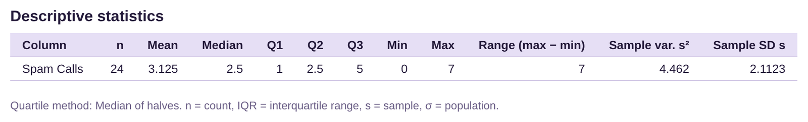
The mean, median, and range are all given in the output. The standard deviation is 2.1 calls, rounded to one decimal place. Since the mean is 3.1, that tells us that most of the time, the number of spam calls the student gets will be the mean plus or minus the standard deviation.
The mean minus the standard deviation is 3.1 – 2.1 = 1.
The mean plus the standard deviation is 3.1 + 2.1 = 5.2.
Most of the time, the student will get between 1 spam call and 5.2 spam calls per day. Check the data. Most of the days she got 1, 2, 3, 4, or 5 calls. There were only 5 days when she did not get between one and five calls (including 1).
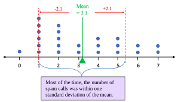
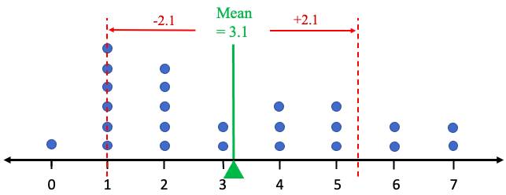
Figure 3.20: Dot plot showing most spam calls within one standard deviation of the mean.
Example 6: Finding descriptive statistics
In example 5 from section 2.2 and example 8 from section 3.1, we used the data for the ages of United States Presidents at inauguration. Table 13 contains the data. The raw data in a column can be copied and pasted into STATBELT Utility by opening the presidents’ ages data file (opens in a new tab), or you can choose “U.S. Presidents Age at Inauguration” from the “Sample Data” menu above the data table. Find the mean, median, range, variance, and standard deviation. Interpret the standard deviation.
Photo by Sandra Grünewald (opens in a new tab) on Unsplash (opens in a new tab)
Table 13: Ages of Presidents at Inauguration | |||||
|---|---|---|---|---|---|
57 | 68 | 56 | 54 | 60 | 64 |
61 | 51 | 46 | 42 | 61 | 46 |
57 | 49 | 54 | 51 | 43 | 54 |
57 | 64 | 49 | 56 | 55 | 47 |
58 | 50 | 51 | 55 | 56 | 70 |
57 | 48 | 47 | 51 | 61 | 78 |
61 | 65 | 55 | 54 | 52 | |
54 | 52 | 55 | 51 | 69 | |
Solution:First copy or type the data into STATBELT Utility, or load the sample data. Then, select Descriptive Statistics → Basic Statistics and check “Age at inauguration.” Now be careful! The introduction to the problem did not state whether this was sample data or population data. But because it is a list of all United States Presidents, it is a population. That means we need to use the population variance and population standard deviation. Under “Statistics to show,” click “Select none,” then check Mean, Median, Minimum, Maximum, “Range (max − min),” “Population variance (σ²),” and “Population standard deviation (σ).” Then click “Show results in a new window.”
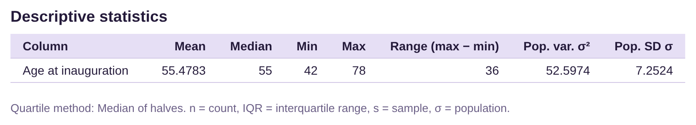
As we found in section 3.1, example 8, the mean is about 55.5 and the median is 55. The range is 36 years, meaning there is a 36-year gap between the youngest President (Theodore Roosevelt, 42) and the oldest President (Joe Biden, 78) at inauguration. The standard deviation rounds to either 7.25 years or 7.3 years, depending on your preference. We will use 7.25 because 0.25 of one year is one-fourth of a year, but 7.3 would also be acceptable.
The mean minus the standard deviation is 55.5 – 7.25 = 48.25.
The mean plus the standard deviation is 55.5 + 7.25 = 62.75.
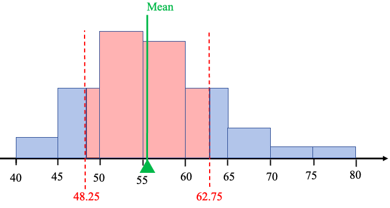
Figure 3.21: Histogram showing the age within one standard deviation of the mean.
The interpretation is that most of the time, our presidents have assumed office between 48.25 and 62.75 years old. See figure 3.21.
Example 7: Comparing variation
The histograms shown in figure 3.22 are for exam scores in statistics courses taught during the Spring 2019 and Fall 2019 semesters. Which course had more consistent scores on the exam? Which class had more variation among the exam scores?
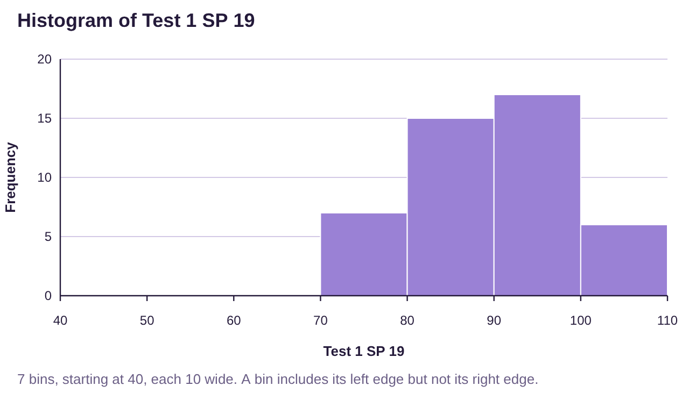
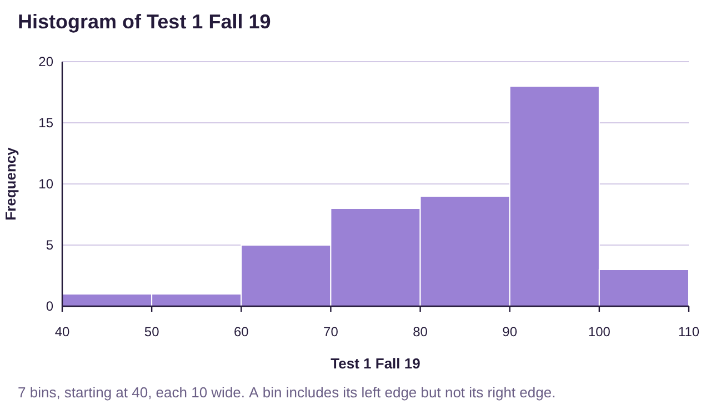
Figure 3.22: Histograms for statistics grades in Spring 2019 and Fall 2019 semesters.
Solution:Both of these data sets are skewed to the left, but the skew on the Fall 2019 histogram reaches lower. The range of the Fall 2019 class looks like it is about 60, stretching from the 40’s all the way to 100. Grades in that class look to be very spread out.
The grades in the Spring 2019 class were all between 70 and 100. The range appears to be about 30. These grades look like they are more closely grouped.
Summary: The Fall 2019 grades were more widely dispersed, so they have the larger standard deviation. The Spring 2019 grades were more closely grouped, so they had the smaller standard deviation. We would say that the Spring 2019 class had more consistent scores.
If you would like, you can access the Spring and Fall 2019 exam scores (opens in a new tab). Copy the data into STATBELT Utility and find the summary statistics shown here.
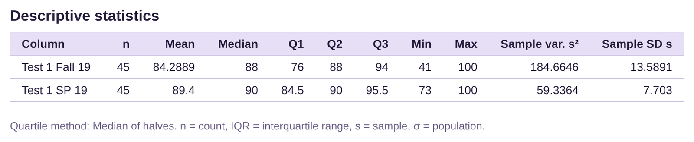
Both classes had averages that were in the 80’s, and the medians of the classes were 88 and 90, both very close. The difference between the groups can be seen in the ranges and standard deviations. The Spring 2019 class had a range of 27 and standard deviation of 7.7. The Fall 2019 class had a range of 59 and standard deviation of about 13.6. This confirms our analysis from the histograms.
We concluded example 6 with the phrase, “most of the time, our presidents have assumed office between 48.25 and 62.75 years old.” Now we must explain what we mean by “most of the time.” The fact that the data were bell-shaped tells us to expect most of the data to be grouped in the center. But that is not always the case. What if the data were not bell-shaped?
Chebyshev’s Theorem: Simplified Version
For any data set or distribution, regardless of the shape, at least 75% of the observations will lie within two standard deviations of the mean.
This leads us to use standard deviation as the standard unit of measure for different data sets and distributions. So, for any data set or distribution, the standard deviation becomes the “yardstick” we use to describe it. For example, a cholesterol level that is two standard deviations above the mean is very high. I don’t have to know the values of the mean or standard deviation, or their units, to understand that fact. Knowing that it is two standard deviations above the mean puts it at the very high end. A test score that is one standard deviation below the average is likewise enough to understand that score, without knowing the mean or standard deviation values.
Example 8: Chebyshev’s Theorem
Use the data for the ages of United States Presidents at inauguration in Table 13 to compute two standard deviations both above and below the mean. Interpret the result in terms of Chebyshev’s inequality.
Table 13: Ages of Presidents at Inauguration | |||||
|---|---|---|---|---|---|
57 | 68 | 56 | 54 | 60 | 64 |
61 | 51 | 46 | 42 | 61 | 46 |
57 | 49 | 54 | 51 | 43 | 54 |
57 | 64 | 49 | 56 | 55 | 47 |
58 | 50 | 51 | 55 | 56 | 70 |
57 | 48 | 47 | 51 | 61 | 78 |
61 | 65 | 55 | 54 | 52 | |
54 | 52 | 55 | 51 | 69 | |
Solution:We have previously calculated the mean as and the standard deviation as .
Two standard deviations are equal to .
Two standard deviations below the mean equals .
Two standard deviations above the mean equals .
Interpretation: Using Chebyshev’s inequality, at least 75% of the ages of US Presidents at inauguration were between 41 and 70. In fact, only two presidents were 70 or older, and none were 41or younger.
We can be even more specific if we know that the distribution is bell-shaped. In that case, we can use the empirical rule for bell-shaped data. We will study the bell-shaped distribution in greater detail in chapter 7.
The Empirical Rule for Bell-shaped Data
For any data set or distribution that is approximately bell-shaped,
•About 68% of the observations will lie within one standard deviation of the mean.
•About 95% of the observations will lie within two standard deviations of the mean.
•About 99.7% of the observations will lie within three standard deviations of the mean.
See figure 3.23.
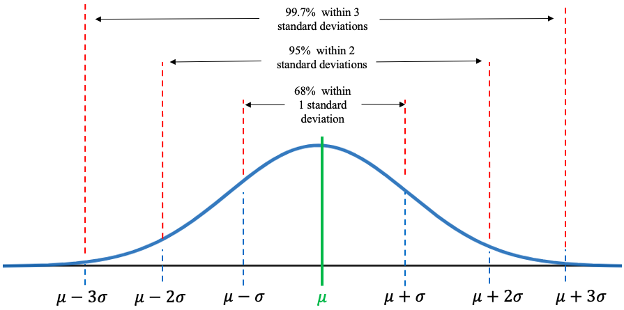
Figure 3.23: The Empirical Rule.
Example 9: The Empirical Rule
In example 8 we calculated two standard deviations above and below the mean age of a US President at inauguration. Interpret the result in terms of the empirical rule. The data is in Table 13.
Solution:We calculated the mean as 55.5 and the standard deviation as 7.25. So, two standard deviations below the mean equals , and two standard deviations above the mean equals .
Table 13: Ages of Presidents at Inauguration | |||||
|---|---|---|---|---|---|
57 | 68 | 56 | 54 | 60 | 64 |
61 | 51 | 46 | 42 | 61 | 46 |
57 | 49 | 54 | 51 | 43 | 54 |
57 | 64 | 49 | 56 | 55 | 47 |
58 | 50 | 51 | 55 | 56 | 70 |
57 | 48 | 47 | 51 | 61 | 78 |
61 | 65 | 55 | 54 | 52 | |
54 | 52 | 55 | 51 | 69 | |
The ages of US Presidents at inauguration are approximately bell shaped. See figure 3.24.
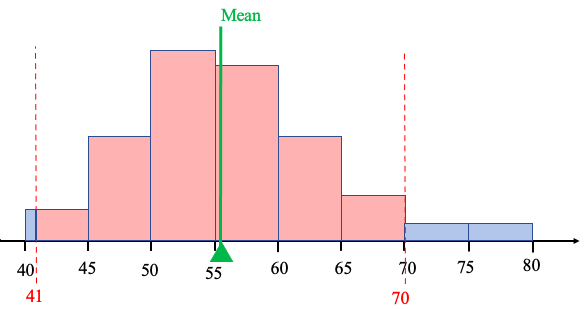
Figure 3.24: The Empirical Rule and US Presidents.
Since the histogram of the ages of US Presidents at inauguration is approximately bell-shaped, we know by the empirical rule for bell-shaped data that approximately 95% of the ages should be within two standard deviations of the mean, or between 41 and 70. In fact, only two of the 46 presidents were 70 or older, meaning that 44 out of 46 US Presidents were between 41 and 70 when inaugurated. That is, , or about 95.7% were within two standard deviations of the mean age. That is very close to what the empirical rule predicts!
Note that if we don’t know the shape of the distribution, Chebyshev’s inequality tells us that at least 75% of observations are within two standard deviations of the mean. If we additionally know the distribution is bell-shaped, the empirical rule says closer to 95% of the observations will be within two standard deviations of the mean. Knowing that the shape of the distribution is bell-shaped tells us that more of the data will be clustered around the mean.
Example 10: The Empirical Rule
Table 14 lists the average poverty rates in the United States (previously given in example 6 in section 2.2) sorted from lowest to highest. You can copy the poverty rate data (opens in a new tab). The histogram is given in figure 3.25, and the summary statistics output is given below. (Because this list contains data from every state and the District of Columbia, we treat the data as a population and use the population standard deviation.) Use the mean equal to 12.03 and standard deviation equal to 2.93 to find:
a)About 68% of poverty rates are between what two values?
b)About 95% of poverty rates are between what two values?
c)What is the actual percent of poverty rates that are within two standard deviations of the mean?
Table 14: Percent of Population of States Living in Poverty 2016-2018 (sorted) | ||||||||
|---|---|---|---|---|---|---|---|---|
6.4 | 9.2 | 9.9 | 10.7 | 11.4 | 12.2 | 13.6 | 14.7 | 18.7 |
7.1 | 9.5 | 10.3 | 10.8 | 11.5 | 12.2 | 13.7 | 14.9 | 19.8 |
7.9 | 9.5 | 10.3 | 10.9 | 11.8 | 12.5 | 14.0 | 15.3 | 19.8 |
8.7 | 9.6 | 10.4 | 10.9 | 11.8 | 12.6 | 14.1 | 15.5 | |
8.9 | 9.6 | 10.4 | 11.0 | 11.8 | 12.6 | 14.1 | 16.0 | |
9.1 | 9.8 | 10.6 | 11.3 | 11.9 | 12.8 | 14.4 | 17.2 | |
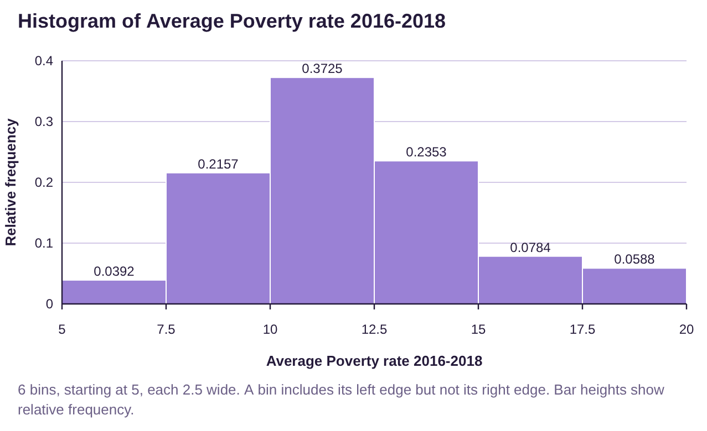
Figure 3.25: Histogram for average poverty rates in the US is approximately bell-shaped.
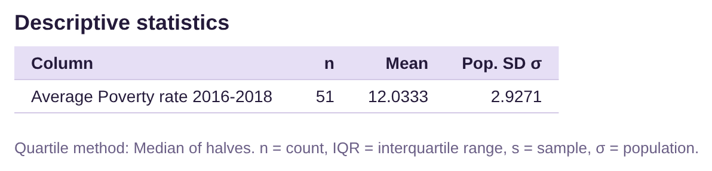
Solution:a)The histogram shows that the data are approximately bell-shaped. The empirical rule tells us that about 68% of the poverty rates will be within one standard deviation of the mean.
One standard deviation lower:
One standard deviation higher:
So about 68% of the poverty rates should be between 9.1% and 14.96%.
b)About 95% of the poverty rates will be within two standard deviations of the mean.
Two standard deviations lower:
Two standard deviations higher:
So about 95% of the poverty rates should be between 6.17% and 17.89%.
c)Looking at the data in Table 14, there were no poverty rates below 6.17%. However, there were three poverty rates that were higher than 17.89%. They were 18.7, 19.8, and 19.8. That means that 48 out of the 51 observations were between 6.17% and 17.89%. That works out to be
, or about 94.1%. The empirical rule told us to expect about 95%, and we found it to be 94.1%, which is very close.